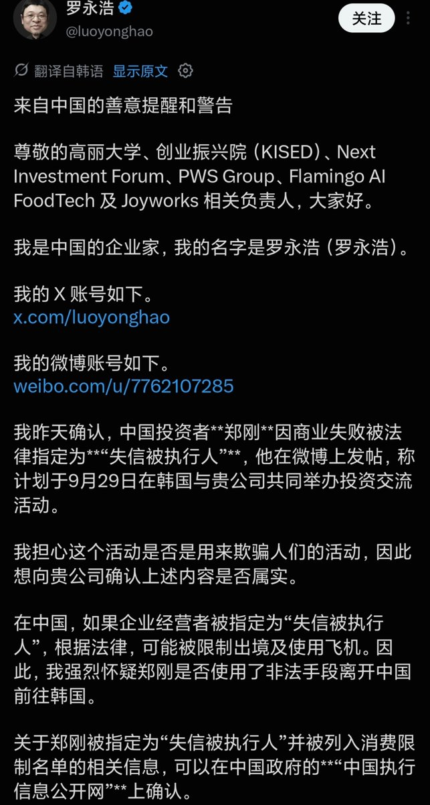
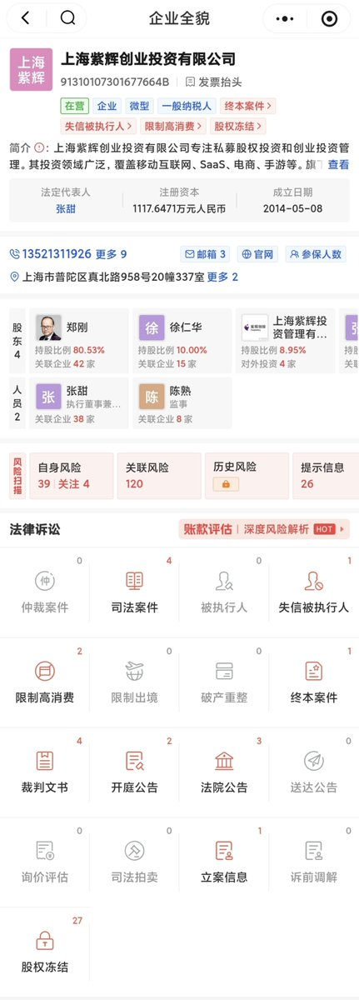
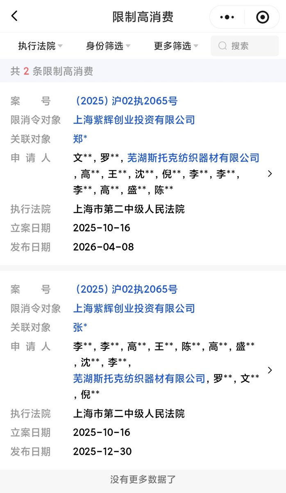
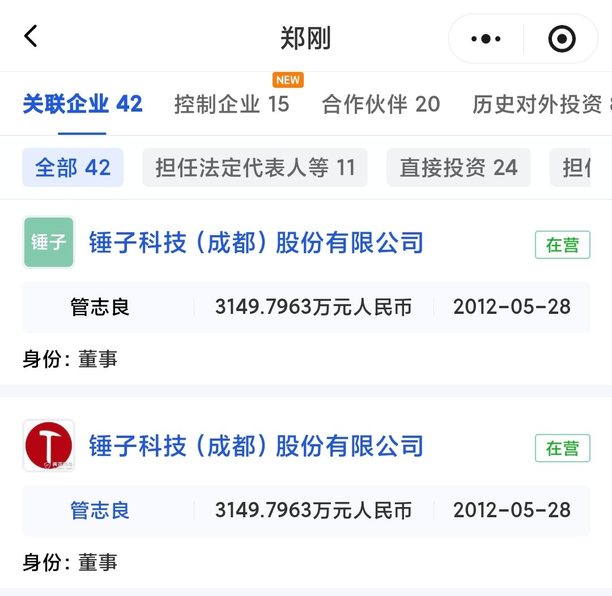

在我眼里，罗永浩是行业搅屎棍，昨天在tl还刷到他用朝鲜族语对韩方说郑刚是骗子。查了一下紫辉创投才知道，人家在2016年投了锤子科技1500万，后面因利益纠纷在网上互撕了10年至今
郑刚是紫辉创投创始合伙人兼CEO，所在的上海紫辉创业投资有限公司于2026年4月8日被上海市第二中级人民法院限高，目前案件已终本。按照罗太君的说法前往裁判文书网查询仅有限制高消费措施，并没有限制出境。因此，对方可能是走香港再搭乘航班前往韩国
所谓限高，即限制高消费。在出行方面，坐不了飞机（国内航司）、铁路G字头（高铁）、特等座、一等座，只能乘坐D字头（动车）、C字头（城际）等二等坐、无座。因此可前往深圳后，凭护照通过深港口岸再飞往第三国。另外限高在民航上仅针对国内航司，若要在国内航线同行，可通过国泰航空购买共享航班实际承运是国航（Air China）也可以出票
人生总有大起大落。若因一次失败一棍子打死，不给翻身的机会，那跟把人打入地牢永世不得超生没什么区别。限高措施具有法律滞后性，针对的是有钱不还的老赖，然而实际司法实践中却漏洞百出。我想郑总作为锤子科技的投资人，一定很后悔10年前投了锤子，养了这种白眼狼
郑刚是紫辉创投创始合伙人兼CEO，所在的上海紫辉创业投资有限公司于2026年4月8日被上海市第二中级人民法院限高，目前案件已终本。按照罗太君的说法前往裁判文书网查询仅有限制高消费措施，并没有限制出境。因此，对方可能是走香港再搭乘航班前往韩国
所谓限高，即限制高消费。在出行方面，坐不了飞机（国内航司）、铁路G字头（高铁）、特等座、一等座，只能乘坐D字头（动车）、C字头（城际）等二等坐、无座。因此可前往深圳后，凭护照通过深港口岸再飞往第三国。另外限高在民航上仅针对国内航司，若要在国内航线同行，可通过国泰航空购买共享航班实际承运是国航（Air China）也可以出票
人生总有大起大落。若因一次失败一棍子打死，不给翻身的机会，那跟把人打入地牢永世不得超生没什么区别。限高措施具有法律滞后性，针对的是有钱不还的老赖，然而实际司法实践中却漏洞百出。我想郑总作为锤子科技的投资人，一定很后悔10年前投了锤子，养了这种白眼狼



